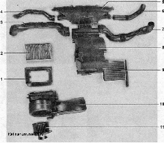

Система вентиляции и отопления салонаСистема вентиляции и отопления салона автомобиля — приточно-вытяжная, при этом для отопления салона используется температура нагретой свыше 90 "С жидкости из системы охлаждения двигателя. При закрытых окнах дверей воздух в салон подается электровентилятором. Интепсивность подачи воздуха регулируется скоростью вращения крыльчатки электровентилятора. Электродвигатель вентилятора имеет четыре режима скорости (пониженные скорости обеспечивает дополнительный резистор с двумя обмотками). Забор воздуха осуществляется через воздухозаборник, установленный под рамкой ветрового стекла. Для очистки поступающего в салон воздуха на воздухозаборном отверстии отопителя установлен фильтрующий элемент из нетканого синтетического материала. Основные данные для контроля, регулировки и обслуживания
Вытяжка осуществляется за счет разрежения, возникающего возле задней части кузова при движении автомобиля. Вытяжные дефлекторы встроены в панели кузова под задним бампером. 
Детали отопителя: 1 — корпус фильтра системы вентиляции и отопления салона; 2 — фильтрующий элемент; 3, 4, 5, 6, 7 — воздуховоды; 8 — кожух радиатора и воздухораспределителя отопителя; 9 — радиатор отопителя; 10 — кожух электровентилятора отопителя; 11 - электровентилятор отопителя Обогрев салона осуществляется отопителем, установленным под панелью приборов. При работе двигателя нагретая жидкость из системы охлаждения циркулирует через радиатор отопителя. нагревая проходящий через него воздух. Количество воздуха, проходящего через радиатор и в обход него, задается центральной заслонкой отопителя, в зависимости от положения ручки регулятора температуры, установленного на панели приборов. Распределение воздуха по салону можно регулировать вращением ручки управления заслонками распределения воздушных потоков, а также поворотом заслонок и направляющих лопастей вентиляционных решеток панели приборов. ПРОВЕРКА ТЕХНИЧЕСКОГО СОСТОЯНИЯ СИСТЕМЫ ВЕНТИЛЯЦИИ И ОТОПЛЕНИЯ1. Подготавливаем автомобиль к выполнению работы. 2. Запускаем двигатель. 3. Поворачиваем ручку регулятора температуры воздуха против часовой стрелки в крайнее положение (синий сектор). 4. Ручкой управления вентилятором отопителя поочередно включаем четыре скорости работы электровентилятора. По интенсивности воздушного потока из сопел проверяем работу электровентилятора и изменение скорости вращения его крыльчатки при смене режимов (1 — минимальная скорость, а 4 — максимальная). Если электровентилятор работает не на всех режимах, проверяем дополнительный резистор и выключатель. Если электровентилятор не работает, то проверяем цепь питания электровентилятора. 5. Включаем максимальную скорость работы электровентилятора. 6. Поворачивая ручки управления заслонками отопителя и вентиляционных решеток, отслеживаем изменение направления воздушных потоков. Если изменение распределения потока не происходит, скорее всего, неисправен привод заслонок. 7. Прогрев двигатель до рабочей температуры, поворачиваем ручку регулятора температуры воздуха по часовой стрелке в крайнее положение (красный сектор). 8. Убеждаемся в том, что воздух, выходящий из сопел панели, стал теплым. Если температура воздуха не изменилась, возможно, неисправен привод центральной заслонки. 9. Поворачиваем ручку регулятора температуры в синий сектор — в салон должен пойти холодный воздух. Если температура не понижается, значит, неисправен привод центральной заслонки. |